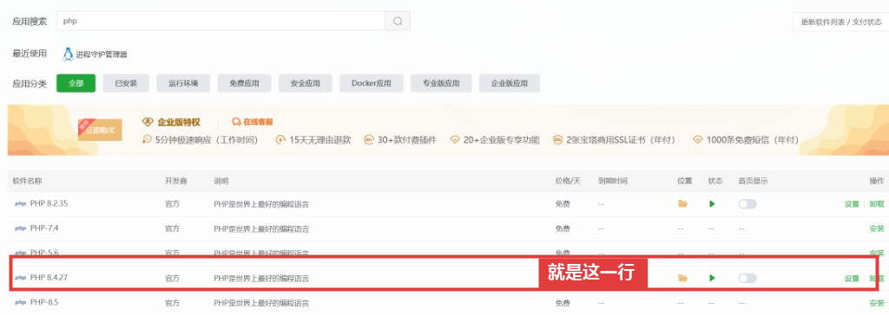
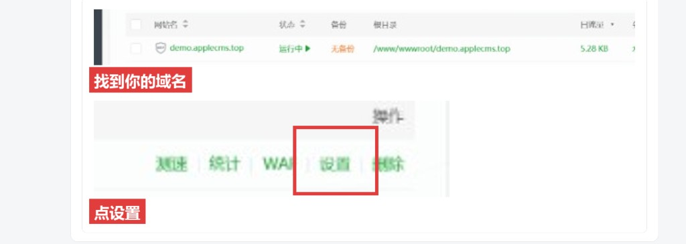
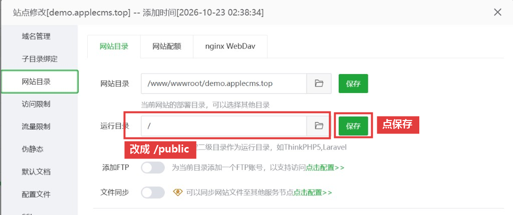
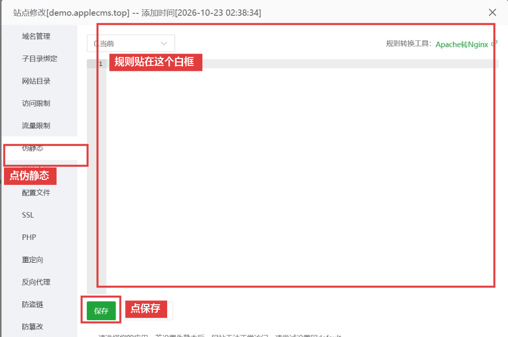

红框就是要点的地方。改完运行目录，再刷新这个网址。
宝塔左边点「软件商店」，搜索 PHP。红框这一行是 PHP-8.4。右边是「安装」就先装上，网站的 PHP 版本也选 8.4。

顶部点「网站」，找到你的域名，右边点红框里的「设置」。

左边已经在「网站目录」。上面的网站目录不用动。下面「运行目录」现在是 / ，改成 /public，再点右边绿色「保存」。

左边点红框里的「伪静态」。白框里如果是空的，把下面整段贴进去，再点绿色「保存」。

location / {
try_files $uri $uri/ /index.php?$query_string;
}